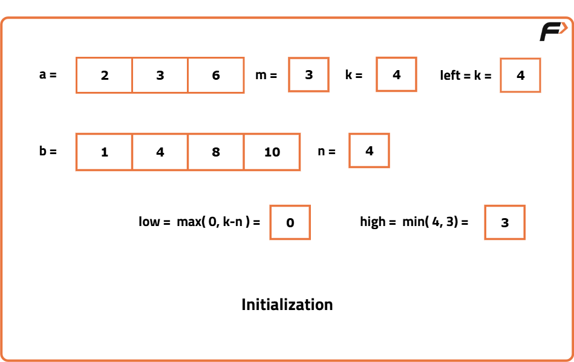
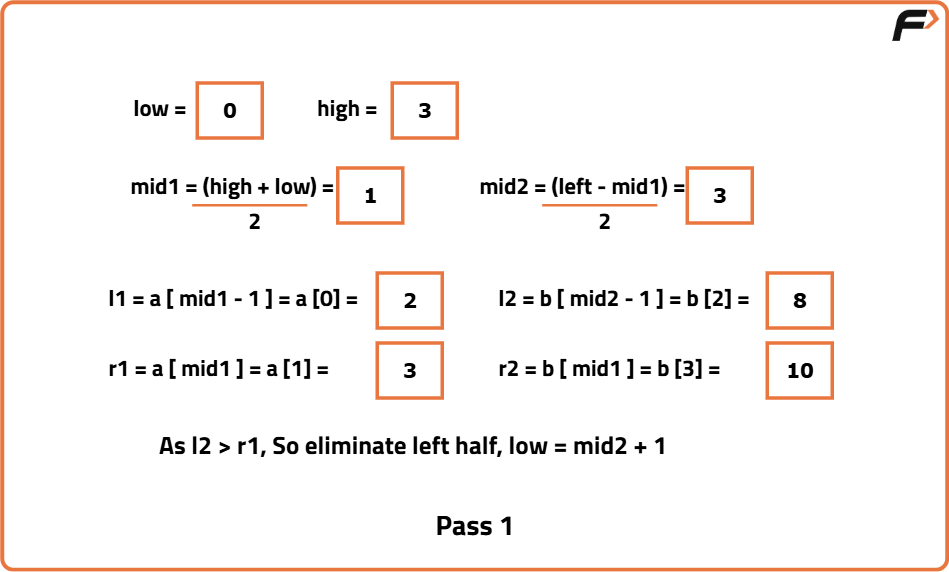
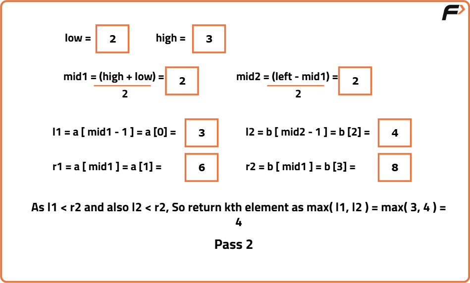

K-th Element of two sorted arrays
Problem Statement: Given two sorted arrays a and b of size m and n respectively. Find the kth element of the final sorted array.
Examples
Example 1: Input: a = [2, 3, 6, 7, 9], b = [1, 4, 8, 10], k = 5 Output: 6 Explanation: The final sorted array would be [1, 2, 3, 4, 6, 7, 8, 9, 10]. The 5th element of this array is 6. Example 2: Input: a = [100, 112, 256, 349, 770], b = [72, 86, 113, 119, 265, 445, 892], k = 7 Output: 256 Explanation: The final sorted array is [72, 86, 100, 112, 113, 119, 256, 265, 349, 445, 770, 892]. The 7th element of this array is 256.
Disclaimer: Here is the practice link to help you assess your knowledge better. It's highly recommend trying to solve it before looking at the solution.
Approach
Algorithm
- First, ensure that arr1 is the smaller array. If not, swap the arrays. Our goal is to treat arr1[] as the smaller array.
- Calculate the length of the left half as left = k.
- Initialize two pointers:
- low will point to max(0, k - n2),
- high will point to min(k, n1) (n1 is the size of the smaller array and n2 is the size of the larger array).
- Calculate 'mid1' and 'mid2':
- mid1 = (low + high) // 2 (integer division),
- mid2 = left - mid1.
- Inside the loop, calculate l1, l2, r1, and r2:
- l1 = arr1[mid1 - 1],
- l2 = arr2[mid2 - 1],
- r1 = arr1[mid1],
- r2 = arr2[mid2].
- If mid1 or mid2 is out of bounds, set l1, l2 to INT_MIN and r1, r2 to INT_MAX.
- Eliminate halves based on the following conditions:
- If l1 <= r2 and l2 <= r1, the answer is found. Return the maximum of l1 and l2.
- If l1 > r2, eliminate the right half by setting high = mid1 - 1.
- If l2 > r1, eliminate the left half by setting low = mid1 + 1.
- When the loop terminates, include a dummy return statement to avoid warnings or errors.



Code
#include <bits/stdc++.h>
using namespace std;
class Solution {
public:
int kthElement(vector<int>& a, vector<int>& b, int k) {
int m = a.size();
int n = b.size();
// Ensure a is smaller array for optimization
if (m > n) {
// Swap a and b
return kthElement(b, a, k);
}
// Length of the left half
int left = k;
// Apply binary search
int low = max(0, k - n), high = min(k, m);
while (low <= high) {
int mid1 = (low + high) >> 1;
int mid2 = left - mid1;
// Initialize l1, l2, r1, r2
int l1 = (mid1 > 0) ? a[mid1 - 1] : INT_MIN;
int l2 = (mid2 > 0) ? b[mid2 - 1] : INT_MIN;
int r1 = (mid1 < m) ? a[mid1] : INT_MAX;
int r2 = (mid2 < n) ? b[mid2] : INT_MAX;
// Check if we have found the answer
if (l1 <= r2 && l2 <= r1) {
return max(l1, l2);
}
else if (l1 > r2) {
// Eliminate the right half
high = mid1 - 1;
}
else {
// Eliminate the left half
low = mid1 + 1;
}
}
// Dummy return statement
return -1;
}
};
int main() {
vector<int> a = {2, 3, 6, 7, 9};
vector<int> b = {1, 4, 8, 10};
int k = 5;
//Create an instance of Solution class
Solution solution;
//Print the answer
cout << "The " << k << "-th element of two sorted arrays is: "
<< solution.kthElement(a, b, k) << '\n';
return 0;
}
Complexity Analysis
Time Complexity: O(log(min(M, N))), where M and N are the sizes of the two given arrays. As binary search is being applied on the range [max(0, k - N2), min(k, N1)], the range length <= min(M, N).
Space Complexity: O(1), as no additional space is used.